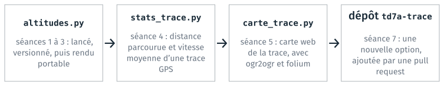

Introduction#
Objectif du module#
Plusieurs cours de votre formation de 1re année demandent de lancer un code fourni, ou d’écrire vous-mêmes des scripts et de les rendre, parfois en équipe. Cela demande de savoir :
lancer un script ou un programme en ligne de commande, dans un terminal ;
manipuler les fichiers en entrée et en sortie de ces programmes ;
ouvrir un projet de code dans un éditeur de code ou dans JupyterLab, et configurer ces outils sur les postes de l’école ;
écrire un script qui fonctionne sur un autre poste, et décrire ce qu’il faut y installer pour le lancer ;
versionner son code avec git, et le partager pour y travailler à plusieurs.
Les mêmes opérations reviennent dans tous les cours où l’informatique sert d’outil de travail. Ces cours supposent ces opérations acquises, mais aucun ne les enseigne en soi.
Ce module INFO-01 a pour objectif principal de vous les apprendre, pour que vous arriviez dans les cours de programmation et dans les TD qui emploient Python sans perdre de temps sur l’outillage.
Progression du module#
Les séances vont de l’utilisation de programmes existants à l’écriture d’un programme, puis à sa livraison à une autre personne. Les séances 4 et 7 sont des TD d’application des séances qui les précèdent.
![Trois colonnes reliées par des flèches. Utiliser des programmes et des fichiers : séance 1, logiciels, fichiers, terminal et premier programme. Développer un programme, seul puis à plusieurs : séance 2, éditeur de code et git local ; séance 3, fichiers, chemins et programme en ligne de commande ; séance 4, projet d'application 1. Livrer un programme à une autre personne : séance 5, réutiliser des programmes et des bibliothèques ; séance 6, forge, mots de passe et secrets ; séance 7, projet d'application 2.](_images/progression.svg)
Les sept séances du module. En brun, les deux TD d’application.#
- Utiliser des programmes (séance 1)
La séance rappelle le fonctionnement d’un ordinateur, puis présente deux notions employées dans tout le module : les logiciels, qu’on utilise ou qu’on écrit, et les fichiers, qui contiennent les données lues et produites par les programmes.
Elle fait ensuite découvrir la ligne de commande. Git s’utilise en ligne de commande, comme les programmes écrits dans la suite du module, car un tel programme est plus simple à écrire qu’un programme avec des fenêtres et des boutons.
- Développer un programme (séances 2 à 4)
La séance 2 présente deux outils qui facilitent la programmation : un éditeur de code, VS Code, et git, qui enregistre les versions d’un projet et permet d’y travailler à plusieurs. Git se comprend surtout en le pratiquant, et il revient donc dans les séances suivantes, sur des exercices courts.
La séance 3 montre comment Python lit et écrit des fichiers, et comment écrire un script qui fonctionne sur d’autres données et sur le poste d’une autre personne. Elle emploie pour cela deux bibliothèques fournies avec Python,
pathlibpour les chemins etargparsepour les arguments de la ligne de commande.La séance 4 est un TD d’application des trois premières séances : un script Python écrit pas à pas, avec un commit git par étape.
- Livrer un programme (séances 5 à 7)
La séance 5 montre comment un programme Python lance un autre programme, comme on le ferait dans un terminal, et comment il emploie des bibliothèques à installer. Réutiliser un programme ou une bibliothèque évite de les réécrire, mais chaque poste qui lance le programme doit alors les installer. La séance présente donc les dépendances d’un programme, les environnements, et les fichiers qui décrivent l’installation pour un autre poste.
La séance 6 montre comment partager un dépôt git sur GitHub, un site qui héberge des dépôts (une forge). Elle présente en même temps la sécurité des échanges sur le web : mots de passe, clés et tokens, et secrets à garder hors du code.
La séance 7 est un TD d’application des séances 4 à 6 : une modification proposée par une pull request, sur un dépôt GitHub.
Des notions générales d’informatique sont réparties au fil des séances : le matériel, la puissance de calcul et la consommation des appareils à la séance 1, les mémoires et les ordres de grandeur à la séance 3, la consommation et le coût des services en ligne à la séance 6.
Notions reprises d’une séance à l’autre#
La ligne de commande et git ne s’apprennent qu’en les pratiquant souvent. Chaque séance reprend l’un des deux, ou les deux, sur un exercice court.
Séance |
Ligne de commande |
git |
|---|---|---|
1 |
commandes de base, chemins |
|
2 |
commandes git |
dépôt, commit, branche, fusion |
3 |
arguments d’un programme : |
fusion d’une branche |
4 |
dossier du projet, options du programme |
un commit par étape |
5 |
appel d’un programme depuis Python : |
|
6 |
dépôt sur GitHub : |
|
7 |
option |
branche, push, pull request |
Les TD reprennent aussi un même programme, qui calcule des statistiques sur des altitudes, puis sur une trace GPS. Chaque séance le complète avec les notions qu’elle présente. Le TD 6a, sur GitHub, fait exception.

Le programme des TD, de la séance 1 à la séance 7.#
Hors du module#
L’algorithmique n’est pas traitée ici. Écrire un algorithme, choisir une structure de données et raisonner sur la complexité relèvent du cours de programmation, qui a lieu en parallèle. Le tableau donne des exemples de questions, et le cours qui les traite.
Question |
Traitée ici |
Traitée ailleurs |
|---|---|---|
Quel algorithme résout ce problème ? |
cours de programmation |
|
Où mettre ce fichier, et sous quel nom ? |
oui |
|
Comment écrire cette boucle ? |
cours de programmation |
|
Comment lancer ce script sur une autre machine ? |
oui |
|
Comment retrouver la version qui fonctionnait ? |
oui |
Les deux cours se complètent : le cours de programmation porte sur le code lui-même, ce module sur les fichiers, les outils et l’environnement qui le font fonctionner.
Organisation#
Le module compte sept séances de deux heures. Chaque séance alterne des explications courtes et des TD faits sur machine. Les séances 4 et 7 se terminent par un travail à rendre : le dossier du projet avec son historique git, puis un dépôt GitHub avec sa pull request fusionnée.
Les fichiers des TD sont dans une archive par séance, info01-cours<n>.zip,
à copier sur le poste en début de séance. Les TD des séances 1, 2, 4, 5 et 7
ont un guide détaillé, dans l’archive et dans la page de leur séance.
Compétences visées#
À la fin du module, vous savez :
lancer un programme et agir sur des fichiers dans un terminal (séance 1) ;
reconnaître ce que contient un fichier, indépendamment de son extension (séances 1 et 3) ;
ouvrir un projet dans un éditeur de code et vous y retrouver (séance 2) ;
enregistrer votre travail avec git, revenir à une version antérieure et fusionner une branche (séances 2 et 3) ;
écrire un script Python qui lit des fichiers et en produit d’autres, qui reçoit ses paramètres en ligne de commande, et qui fonctionne sur un autre poste que le vôtre (séance 3) ;
installer une bibliothèque dans un environnement, et décrire cet environnement pour qu’une autre personne l’installe (séance 5) ;
publier un dépôt sur GitHub, et y proposer une modification par une pull request (séances 6 et 7) ;
protéger vos accès aux services en ligne, et garder les secrets hors du code (séance 6).
Après le module#
Le module introduit ces notions sans les couvrir en entier. Elles s’acquièrent en les pratiquant ensuite, dans les TD et les projets des autres cours, chaque fois qu’un travail demande d’écrire ou de lancer du code. La page S’entraîner propose des jeux et des exercices sur la ligne de commande et git.